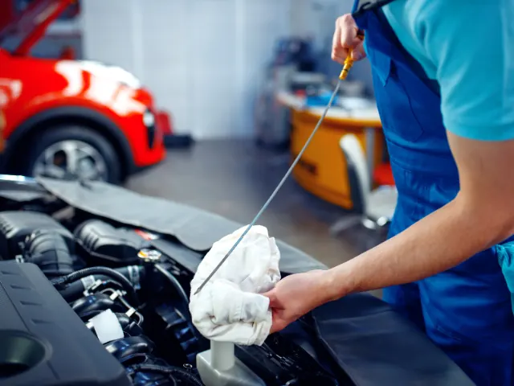
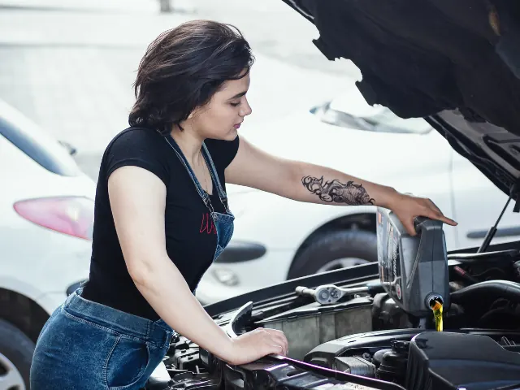

Motorolie in topconditie: verleng de levensduur van je motor in Nijmegen
Gepubliceerd op 24 oktober 2024, bijgewerkt op 5 november 2024

Het regelmatig controleren en verversen van motorolie is een essentieel aspect van auto-onderhoud dat helaas door veel autobezitters wordt overgeslagen. Toch kan deze simpele handeling een groot verschil maken in de levensduur en prestaties van je auto. In dit artikel leggen we uit waarom het belangrijk is om je motorolie op tijd te verversen en hoe dit kan helpen om dure reparaties te voorkomen. Dit artikel is speciaal geschreven wanneer je in het bezit bent van een auto in Nijmegen en omstreken, zodat je jouw auto optimaal kunt onderhouden en genieten van zorgeloze kilometers.
Waarom is motorolie zo belangrijk?
Motorolie speelt een cruciale rol in het behoud van de prestaties van je motor. Het kan worden gezien als het “bloed” van de motor dat ervoor zorgt dat alle bewegende onderdelen soepel blijven draaien en niet oververhit raken. De olie vermindert wrijving en zorgt voor koeling van de motor. Als de olie oud of vervuild raakt, verliest deze zijn effectiviteit, wat kan leiden tot oververhitting en mogelijk ernstige motorschade.
Voor inwoners van Nijmegen, die vaak korte ritjes maken door de stad of in de file staan, is het extra belangrijk om de motorolie goed in de gaten te houden. Korte ritjes zorgen ervoor dat de motor vaak niet voldoende op temperatuur komt, wat de kwaliteit van de olie sneller kan verminderen. Het effect van motorolie op motorprestaties kan dus niet worden onderschat, vooral niet bij stedelijk verkeer waar motoren intensiever worden belast.
Wanneer moet je de motorolie verversen?
Hoe vaak je de olie moet verversen hangt af van verschillende factoren, zoals je automodel, rijstijl en de omstandigheden waarin je rijdt. Voor veel automobilisten in Nijmegen, die dagelijks te maken hebben met stadsverkeer en mogelijk lange stukken op de snelweg, is het aan te raden om de olie elke 15.000 tot 30.000 kilometer te verversen, of ten minste eenmaal per jaar.
Rijd je in een oudere auto of gebruik je je voertuig onder zware omstandigheden, zoals vaak filerijden of korte ritjes, dan kan het verstandig zijn om de olie vaker te controleren en eerder te vervangen. Een eenvoudige manier om te controleren of de olie aan vervanging toe is, is door naar de kleur en consistentie te kijken. Verse olie is amberkleurig en doorschijnend, terwijl verouderde olie donker en dik wordt.

Minder slijtage en langere levensduur van je motor
In Nijmegen, waar veel mensen afhankelijk zijn van hun auto voor dagelijkse ritten naar werk, studie of familiebezoek, is het belangrijk om de auto in topconditie te houden. Door de motorolie op tijd te verversen, kun je de slijtage van belangrijke onderdelen zoals zuigers en lagers aanzienlijk verminderen. Dit komt doordat schone olie de wrijving tussen bewegende delen vermindert, waardoor deze soepeler werken en minder snel slijten.
Lokale automonteurs in Nijmegen raden dan ook aan om regelmatig een onderhoudsbeurt in te plannen. Zoals Anna van Dijk, ingenieur automobielsystemen, benadrukt: “Voor mensen die in een stad als Nijmegen wonen en regelmatig korte ritten maken of in het weekend langere afstanden afleggen, is het verversen van olie cruciaal om motorslijtage te minimaliseren en grote reparaties te voorkomen.
De juiste olie kiezen voor jouw auto
Elke auto heeft specifieke eisen voor motorolie, en het kiezen van de juiste olie is essentieel voor het behoud van de motorprestaties. Dit geldt ook voor automobilisten in Nijmegen, waar de seizoenswisselingen met koude winters en warme zomers extra druk op de motor kunnen leggen.
Controleer altijd de handleiding van je auto om er zeker van te zijn dat je de juiste olie kiest die voldoet aan de specificaties van de fabrikant. Een Citroën C3, bijvoorbeeld, vereist een specifieke olie die voldoet aan de eisen van Citroën. Het gebruik van de verkeerde olie kan leiden tot verminderde prestaties en zelfs motorschade.
Lange termijn voordelen
Door regelmatig onderhoud, zoals het tijdig verversen van motorolie, kun je op de lange termijn flink besparen op kosten voor dure reparaties. Dit geldt ook voor inwoners van Nijmegen die hun auto vaak gebruiken voor woon-werkverkeer of weekenduitjes. Een goed onderhouden motor gaat langer mee en biedt meer betrouwbaarheid, wat zorgt voor gemoedsrust.
Daarnaast behoudt een auto met een gedocumenteerde onderhoudsgeschiedenis zijn waarde beter. Als je ooit besluit je auto te verkopen, is regelmatig onderhoud een groot voordeel dat de waarde van je voertuig verhoogt.

Conclusie
Het regelmatig verversen van motorolie is een eenvoudige, maar zeer belangrijke stap in het onderhoud van je auto. Voor autobezitters in Nijmegen kan dit niet alleen zorgen voor betere motorprestaties, maar ook voor lagere kosten op de lange termijn door minder slijtage en reparaties. Of je nu dagelijks in het stadsverkeer rijdt of lange ritten maakt over de snelweg, zorg ervoor dat je je motorolie regelmatig controleert en vervangt. Dit is een investering die zich dubbel en dwars terugbetaalt.